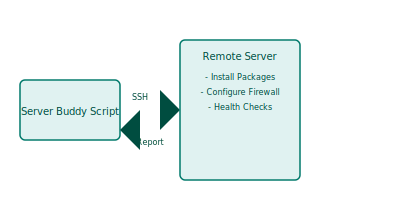

Project Overview: Server Buddy
Our "Server Buddy" will be a helpful Bash script designed to automate common tasks you might perform on a remote server. Imagine Froggy helping you manage your lily pads from afar!
Key features we aim to build:
- Connect to a remote server using SSH (securely, of course!).
- Automate package installation or updates.
- Help configure basic firewall rules.
- Perform simple health checks and report back.
Froggy's Blueprint: Server Buddy
Our script will SSH into a server to perform various admin tasks.
This project will teach us about SSH, variables, user input, conditional logic, and functions in Bash.